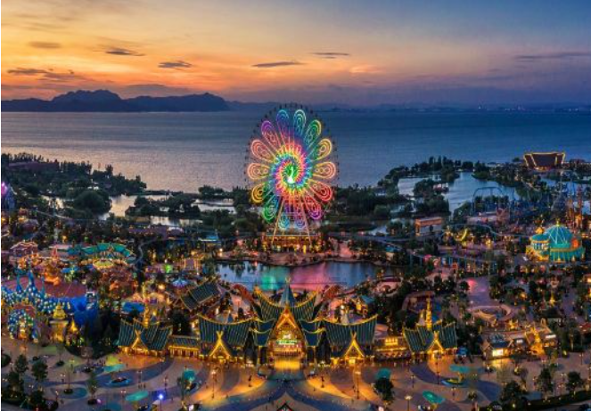
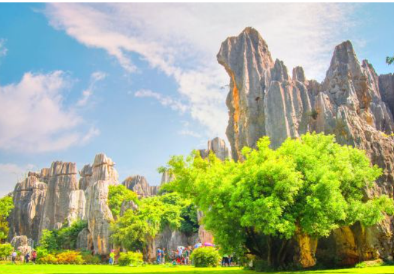
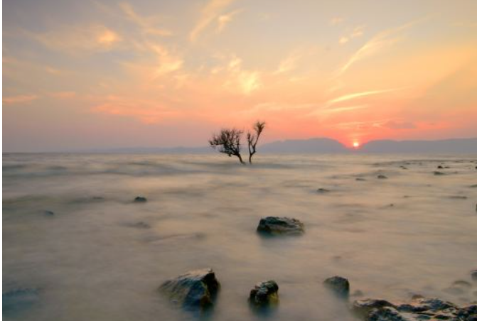
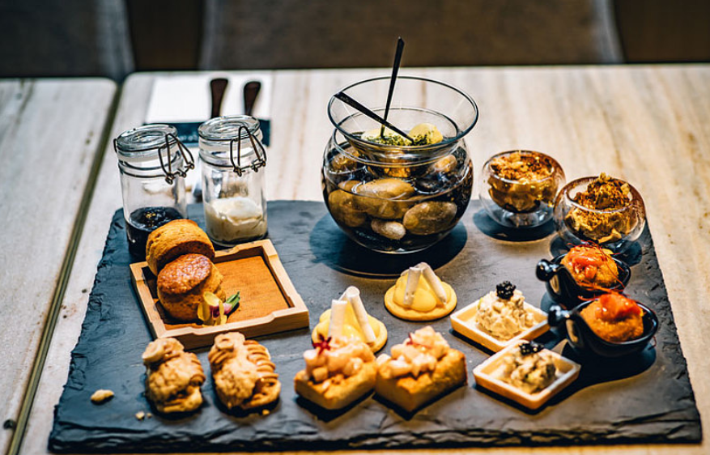
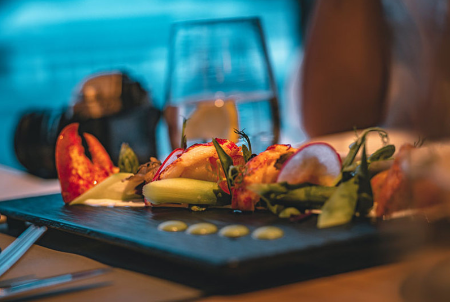
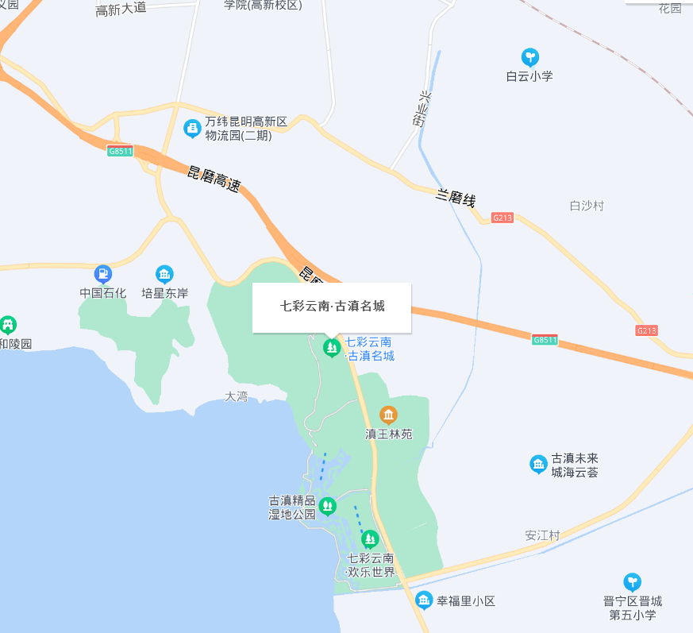

热门景点

七彩云南欢乐世界
七彩云南欢乐世界主题乐园位于昆明晋宁区环湖南路边，以“古滇文化”、“民族文化”、“地域文化”为特色，以独特新颖的方式规划出七大主题分区：滇军营地、幻滇奇域、童梦世界、万象部落、洪荒秘境、霜月寒洲、四季花海，并为孩子们打造了娱乐中心——FEC乐园。
石林风景区
石林景区位于昆明石林县，是昆明的必游景点之一。石林是典型的喀斯特特色地貌，石峰、石芽、落水洞、地下河遍布，峰林幻化成各种形态，剑状、塔状、蘑菇状等等，千奇百怪美轮美奂。
滇池
滇池又称昆明湖，是中国第六大淡水湖。湖面烟波浩渺，十分壮阔，游玩昆明的游客大多会到这里来看一眼。可以在湖边漫步、乘船游湖，冬季还能喂鸟；也可以登上龙门俯瞰滇池，让人心旷神怡


烧腊
烧腊包括烧鹅、乳鸽、乳猪以及一些卤水菜式。一般是先用秘制的酱汁淹制一段时间再放到炉里烤,烧鹅、乳猪皮脆,肥美,口味略带广东人喜爱的甜味。深井烧鹅、花田乳鸽是其中的“老字号”。广东人逢年过节上香拜神都会带上乳猪,电影(视)开镜也喜切乳猪图吉利。卤水菜式相对清淡,卤水鹅掌(翼)、卤水鸭肾等。
蚵仔煎
千年古城梅州,有“客都”之称,中原人“衣冠南迁”到这里,不但带来了读书皆上品的风气,也形成了自己的饮食文化客家菜。火柴盒大小的水豆腐炸成金黄色,把猪肉鱼肉做成的馅“酿”入其中,放进葱花,香油,盛在鸡汤瓦煲内焖着,直到香气四溢。想来到了梅州的客家人一时无麦可包饺子,才创出如此美味。
